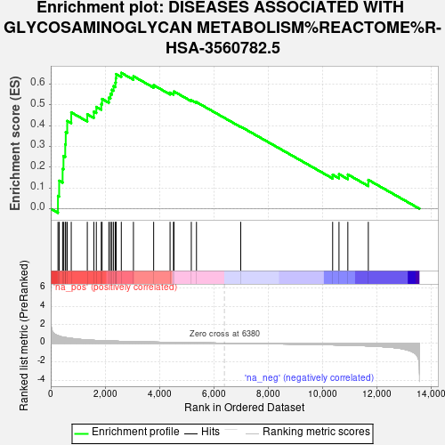
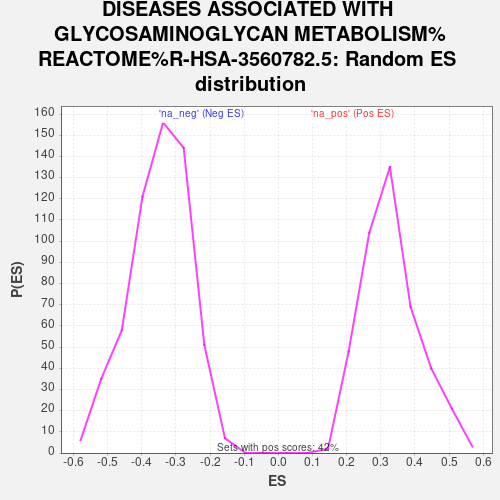

| Dataset | ControlvsDiabete |
| Phenotype | NoPhenotypeAvailable |
| Upregulated in class | na_pos |
| GeneSet | DISEASES ASSOCIATED WITH GLYCOSAMINOGLYCAN METABOLISM%REACTOME%R-HSA-3560782.5 |
| Enrichment Score (ES) | 0.65439165 |
| Normalized Enrichment Score (NES) | 1.9887351 |
| Nominal p-value | 0.0 |
| FDR q-value | 0.07038982 |
| FWER p-Value | 0.592 |

| SYMBOL | RANK IN GENE LIST | RANK METRIC SCORE | RUNNING ES | CORE ENRICHMENT | |
|---|---|---|---|---|---|
| 1 | BGN | 266 | 0.815 | 0.0618 | Yes |
| 2 | GPC1 | 310 | 0.764 | 0.1349 | Yes |
| 3 | CHST3 | 437 | 0.661 | 0.1917 | Yes |
| 4 | OGN | 469 | 0.643 | 0.2537 | Yes |
| 5 | AGRN | 533 | 0.611 | 0.3102 | Yes |
| 6 | OMD | 552 | 0.603 | 0.3691 | Yes |
| 7 | LUM | 606 | 0.578 | 0.4230 | Yes |
| 8 | B4GALT7 | 754 | 0.519 | 0.4639 | Yes |
| 9 | SDC3 | 1344 | 0.346 | 0.4549 | Yes |
| 10 | GPC6 | 1585 | 0.306 | 0.4677 | Yes |
| 11 | EXT1 | 1676 | 0.294 | 0.4905 | Yes |
| 12 | CHST14 | 1858 | 0.270 | 0.5041 | Yes |
| 13 | HEXA | 1887 | 0.268 | 0.5288 | Yes |
| 14 | SDC4 | 2136 | 0.240 | 0.5345 | Yes |
| 15 | DCN | 2196 | 0.235 | 0.5535 | Yes |
| 16 | CHSY1 | 2248 | 0.229 | 0.5727 | Yes |
| 17 | PAPSS2 | 2310 | 0.224 | 0.5906 | Yes |
| 18 | EXT2 | 2377 | 0.217 | 0.6074 | Yes |
| 19 | PRELP | 2393 | 0.216 | 0.6279 | Yes |
| 20 | GPC4 | 2403 | 0.215 | 0.6487 | Yes |
| 21 | HEXB | 2594 | 0.198 | 0.6544 | Yes |
| 22 | FMOD | 3040 | 0.165 | 0.6380 | No |
| 23 | SLC26A2 | 3783 | 0.120 | 0.5950 | No |
| 24 | GPC3 | 4386 | 0.087 | 0.5592 | No |
| 25 | HSPG2 | 4512 | 0.081 | 0.5581 | No |
| 26 | B4GALT1 | 4530 | 0.080 | 0.5648 | No |
| 27 | B3GALT6 | 5167 | 0.053 | 0.5231 | No |
| 28 | VCAN | 5357 | 0.044 | 0.5135 | No |
| 29 | ST3GAL3 | 6984 | -0.023 | 0.3955 | No |
| 30 | SDC2 | 10362 | -0.183 | 0.1640 | No |
| 31 | B3GAT3 | 10595 | -0.198 | 0.1667 | No |
| 32 | CSPG4 | 10920 | -0.223 | 0.1650 | No |
| 33 | NCAN | 11673 | -0.296 | 0.1390 | No |
